- Módulo: Administración de Sistemas Operativos
- Título del trabajo Servidor LDAP
- Componentes del grupo: Cinthia A. Vargas Jiménez
- Curso Académico: 2014/2015
- Fecha de entrega: NOVIEMBRE de 2014
En la siguiente practica , necesitaremos una máquina virtual que haga como servidor
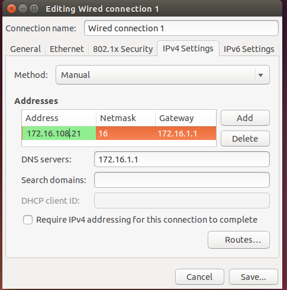
Añadimos las siguientes líneas en el fichero para poder actualizar
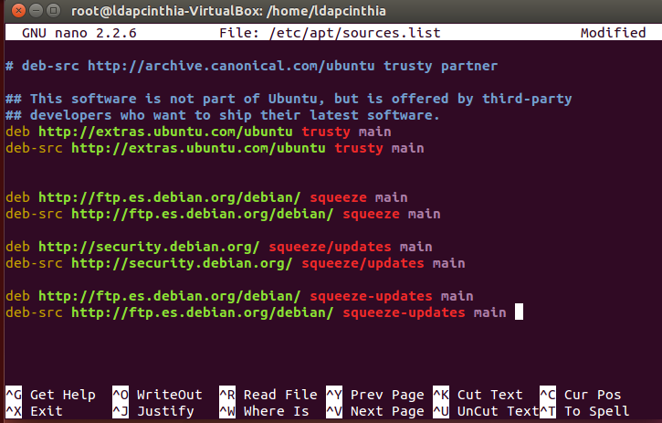

Instalamos el paquete "db4.8-util" disponible en los repositorios.
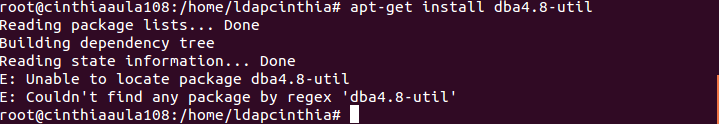
Instalamos "ldap-utils"
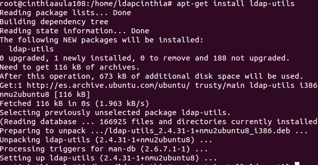
Instalamos "apache2"
Instalamos "libapache2-mod-php5"
Instalamos "php5-ldap".
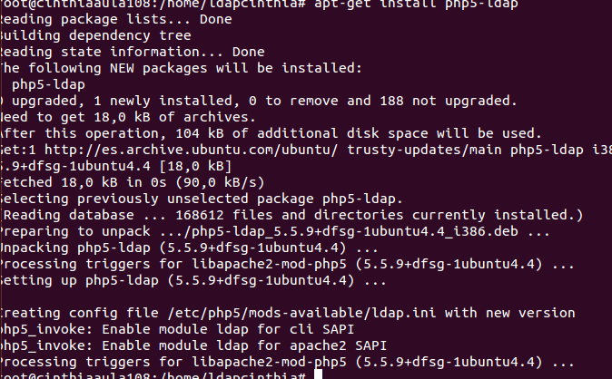
Iniciamos el asistente de configuración de "slapd"
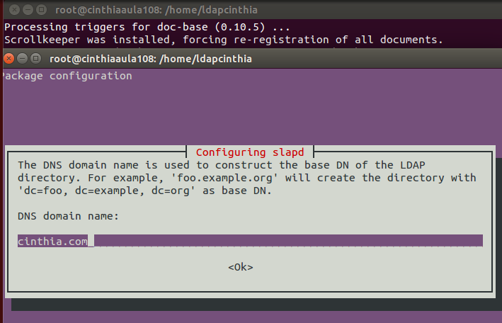
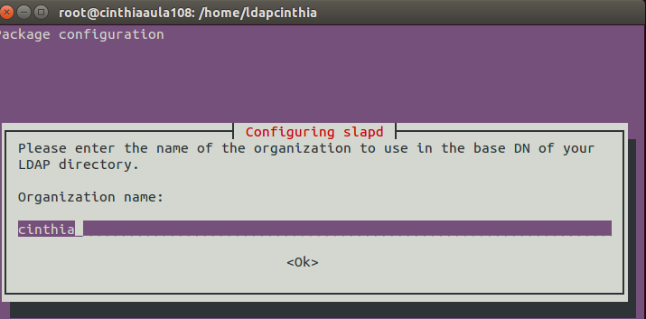
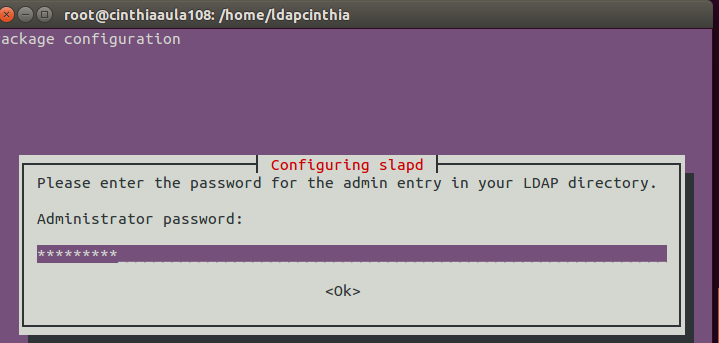
Seleccionamos el sistema BDB
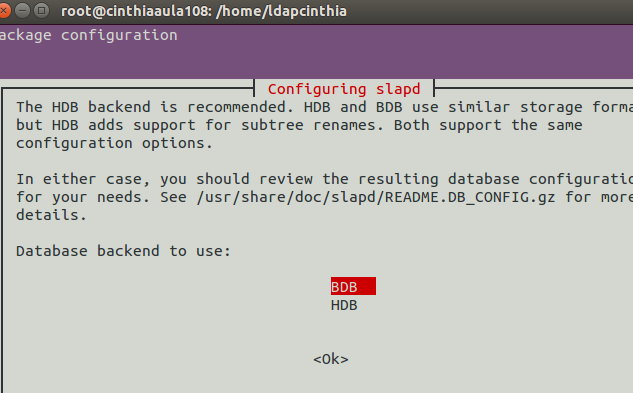
Arrancamos el servidor con el siguiente comando
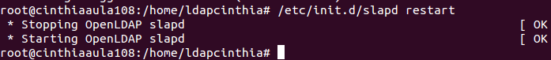
Previa instalación de "JXPLORER" tenemos que configurar el siguiente fichero
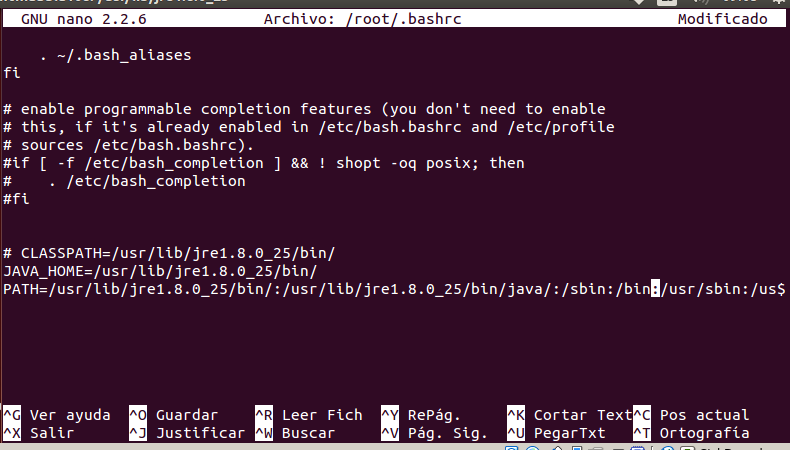
Instalamos JXplorer
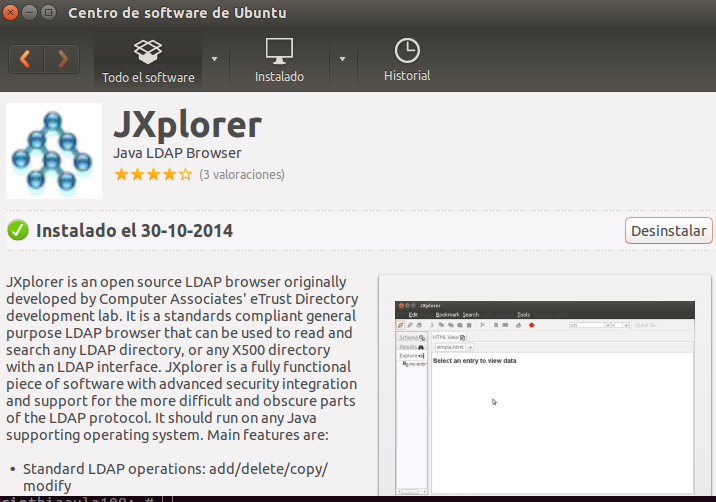
Introducimos los datos y establecemos la conexión
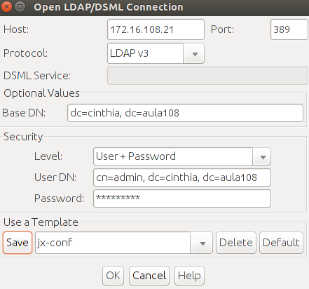
Creamos a : grupos y usuarios
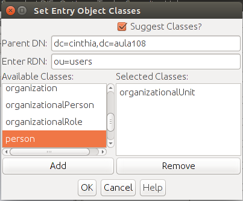 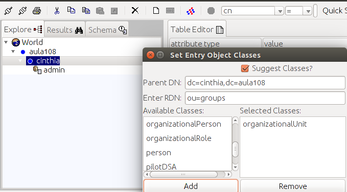
GRUPOS , tiene dentro a profesores y alumnos
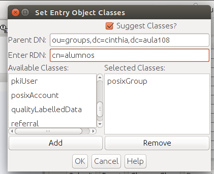 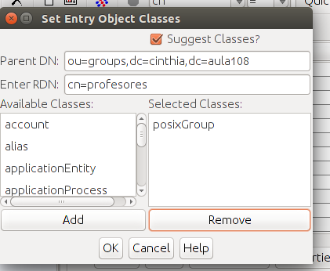
USUARIOS , tienen dentro a javier, joaquin, miguel , jessica y joel